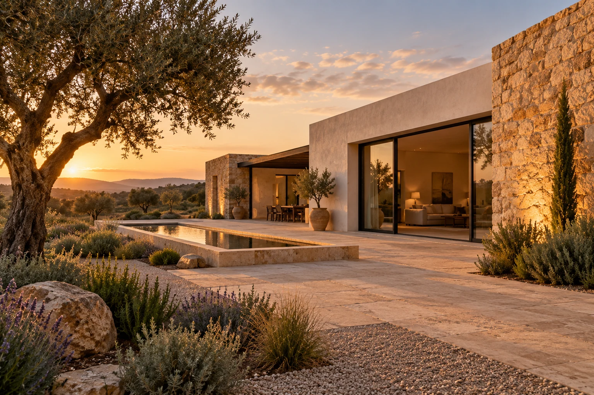

Tu idea, primero.
Conocer el espacio y entender tus prioridades antes de plantear el siguiente paso.

CONSTRUCCIÓN · EXTREMADURA
Construcción y rehabilitación con una mirada puesta en lo que importa: tu espacio, tus necesidades y cada detalle.
Descubre KRONNOS
Una vivienda es mucho más que sus paredes. Es la forma en la que quieres vivir, el lugar al que vuelves y el espacio que haces tuyo.
KRONNOS nace con una idea clara: abordar la construcción y la rehabilitación con atención al espacio, a las personas y a los detalles que dan sentido a cada proyecto.
Nuestra mirada está en Extremadura. Nuestro punto de partida, tu proyecto.
Crear desde cero. Renovar lo existente.
Encontrar una nueva manera de habitar.
Espacios pensados para su uso, su entorno y las personas que los habitan. El comienzo de una nueva historia, desde la primera idea.
Cuéntanos qué quieres construirUna nueva vida para los edificios existentes. Recuperar su carácter y adaptar sus espacios a las necesidades de hoy.
Hablemos de tu inmuebleReplantear distribuciones, renovar ambientes y hacer que tu vivienda funcione mejor para ti. El cambio empieza por entender lo que necesitas.
Comparte tu ideaConocer el espacio y entender tus prioridades antes de plantear el siguiente paso.
Ordenar las necesidades, concretar el alcance y conversar sobre las posibilidades.
Avanzar con una dirección clara y atención a los detalles de la obra.
Espacios, decisiones y detalles.
Una mirada a nuestros proyectos.
PRÓXIMAMENTE
Estamos preparando la selección de proyectos que compartiremos aquí.
Cuéntanos qué tienes en mente.
Construcción, rehabilitación o reforma en Extremadura.